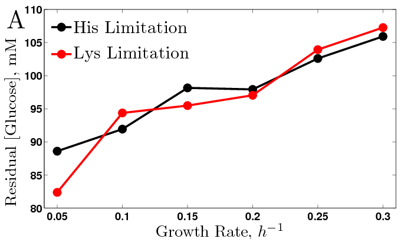
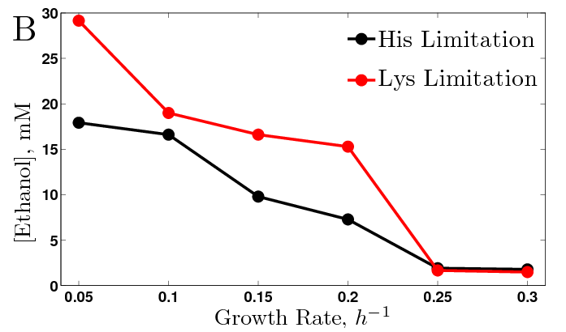
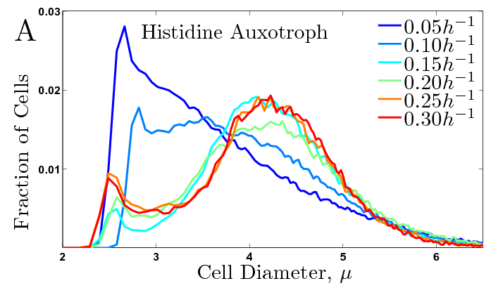
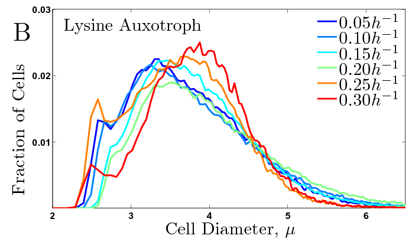

Supporting Information
Deregulation of Cell Growth and Division
Summary
To survive and proliferate, cells need to coordinate their metabolism, gene expression and cell division. To understand this coordination and the consequences of its failure, we uncoupled biomass synthesis from nutrient signaling by growing in chemostats yeast auxotrophs for histidine, lysine, or uracil in excess of natural nutrients (i.e. sources of carbon, nitrogen, sulfur and phosphorus), such that their growth rates were regulated by the availability of their auxotrophic requirements. The physiological and transcriptional responses to growth-rate changes of these cultures differed markedly from the respective responses of prototrophs whose growth-rate is regulated by the availability of natural nutrients. The physiological data for all auxotrophs at all growth rates recapitulated the features of aerobic glycolysis, fermentation despite high oxygen levels in the growth media. In addition, we discovered very wide bimodal distributions of cell sizes, indicating a decoupling between the cell division cycle (CDC) and biomass production. The aerobic glycolysis was reflected in substantial reduction in the expression levels of mitochondrial and TCA genes, and a general signature of anaerobic growth. We also found that the magnitude of the transcriptional growth rate response in the auxotrophs is only 40-50 % of the magnitude in prototrophs. Furthermore, the auxotrophic cultures express autophagy genes at substantially lower levels, which likely contributes to their lower viability. Our observations suggest that a growth rate signal, which is a function of the abundance of essential natural nutrients, regulates fermentation/respiration, the growth rate response, and the CDC.Related Work:
Concentrations |
|
Residual Glucose |
Generated Ethanol |
| | |
Distributions of Cell Sizes |
|
Histidine Limitation |
Lysine Limitation |
|
|